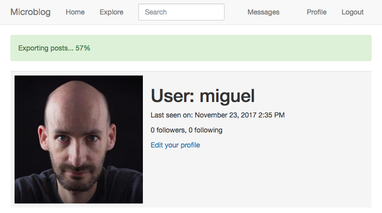

The Flask Mega-Tutorial Part XXII: Background Jobs (2018)
Posted by
on under(Great news! There is a new version of this tutorial!)
This is the twenty second installment of the Flask Mega-Tutorial series, in which I'm going to tell you how to create background jobs that run independently of the web server.
For your reference, below is a list of the articles in this series.
- Chapter 1: Hello, World!
- Chapter 2: Templates
- Chapter 3: Web Forms
- Chapter 4: Database
- Chapter 5: User Logins
- Chapter 6: Profile Page and Avatars
- Chapter 7: Error Handling
- Chapter 8: Followers
- Chapter 9: Pagination
- Chapter 10: Email Support
- Chapter 11: Facelift
- Chapter 12: Dates and Times
- Chapter 13: I18n and L10n
- Chapter 14: Ajax
- Chapter 15: A Better Application Structure
- Chapter 16: Full-Text Search
- Chapter 17: Deployment on Linux
- Chapter 18: Deployment on Heroku
- Chapter 19: Deployment on Docker Containers
- Chapter 20: Some JavaScript Magic
- Chapter 21: User Notifications
- Chapter 22: Background Jobs (this article)
- Chapter 23: Application Programming Interfaces (APIs)
This chapter is dedicated to the implementation of long or complex processes that need to run as part of the application. These processes cannot be executed synchronously in the context of a request because that would block the response to the client for the duration of the task. I briefly touched on this topic in Chapter 10, when I moved the sending of emails to background threads to prevent the client from having to wait during those 3-4 seconds that it takes to send an email. While using threads for emails is acceptable, this solution does not scale well when the processes in question are much longer. The accepted practice is to offload long tasks to a worker process, or more likely to a pool of them.
To justify the need for having long running tasks, I'm going to introduce an export feature to Microblog through which users will be able to request a data file with all their blog posts. When a user makes use of this option, the application is going to start an export task that will generate a JSON file with all the user's posts, and then send it to the user by email. All this activity is going to happen in a worker process, and while it happens the user will see a notification showing the percentage of completion.
The GitHub links for this chapter are: Browse, Zip, Diff.
Introduction to Task Queues
Task queues provide a convenient solution for the application to request the execution of a task by a worker process. Worker processes run independently of the application and can even be located on a different system. The communication between the application and the workers is done through a message queue. The application submits a job, and then monitors its progress by interacting with the queue. The following diagram shows a typical implementation:

The most popular task queue for Python is Celery. This is a fairly sophisticated package that has many options and supports several message queues. Another popular Python task queue is Redis Queue or just RQ, which sacrifices some flexibility, such as only supporting a Redis message queue, but in exchange it is much simpler to set up than Celery.
Both Celery and RQ are perfectly adequate to support background tasks in a Flask application, so my choice for this application is going to favor the simplicity of RQ. However, implementing the same functionality with Celery should be relatively easy. If you are interested in Celery more than RQ, you can read the Using Celery with Flask article that I have on my blog.
Using RQ
RQ is a standard Python package, that is installed with pip:
(venv) $ pip install rq
(venv) $ pip freeze > requirements.txt
As I mentioned earlier, the communication between the application and the RQ workers is going to be carried out in a Redis message queue, so you need to have a Redis server running. There are many options to get a Redis server installed and running, from one-click installers to downloading the source code and compiling it directly on your system. If you are using Windows, Microsoft maintains installers here. On Linux, you can likely get it as a package through your operating system's package manager. Mac OS X users can run brew install redis and then start the service manually with the redis-server command.
You will not need to interact with Redis at all outside of just ensuring that the service is running and accessible to RQ.
Note that RQ does not run on the Windows native Python interpreter. If you are using the Windows platform, you can only run RQ under Unix emulation. The two Unix emulation layers that I recommend to Windows users are Cygwin and the Windows Subsystem for Linux (WSL), and both are compatible with RQ.
Creating a Task
I'm going to show you how to run a simple task through RQ so that you familiarize with it. A task, is nothing more than a Python function. Here is an example task, that I'm going to put in a new app/tasks.py module:
app/tasks.py: Example background task.
import time
def example(seconds):
print('Starting task')
for i in range(seconds):
print(i)
time.sleep(1)
print('Task completed')
This task takes a number of seconds as an argument, and then waits that amount of time, printing a counter once a second.
Running the RQ Worker
Now that the task is ready, a worker can be starter. This is done with the rq worker command:
(venv) $ rq worker microblog-tasks
18:55:06 RQ worker 'rq:worker:miguelsmac.90369' started, version 0.9.1
18:55:06 Cleaning registries for queue: microblog-tasks
18:55:06
18:55:06 *** Listening on microblog-tasks...
The worker process is now connected to Redis, and watching for any jobs that may be assigned to it on a queue named microblog-tasks. In cases where you want to have multiple workers to have more throughput, all you need to do is run more instances of rq worker, all connected to the same queue. Then when a job shows up in the queue, any of the available worker processes will pick it up. In a production environment you will probably want to have at least as many workers as available CPUs.
Executing Tasks
Now open a second terminal window and activate the virtual environment on it. I'm going to use a shell session to kick off the example() task in the worker:
>>> from redis import Redis
>>> import rq
>>> queue = rq.Queue('microblog-tasks', connection=Redis.from_url('redis://'))
>>> job = queue.enqueue('app.tasks.example', 23)
>>> job.get_id()
'c651de7f-21a8-4068-afd5-8b982a6f6d32'
The Queue class from RQ represents the task queue as seen from the application side. The arguments it takes are the queue name, and a Redis connection object, which in this case I initialize with a default URL. If you have your Redis server running on a different host or port number, you will need to use a different URL.
The enqueue() method on the queue is used to add a job to the queue. The first argument is the name of the task you want to execute, given directly as a function object, or as an import string. I find the string option much more convenient, as that makes it unnecessary to import the function on the application's side. Any remaining arguments given to enqueue() are going to be passed to the function running in the worker.
As soon as you make the enqueue() call you are going to notice some activity on your first terminal window, the one running the RQ worker. You will see that the example() function is now running, and printing the counter once per second. At the same time, your other terminal is not blocked and you can continue evaluating expressions in the shell. In the example above, I called the job.get_id() method to obtain the unique identifier assigned to the task. Another interesting expression you can try with the job object is to check if the function on the worker has finished:
>>> job.is_finished
False
If you passed a 23 like I did in my example above, then the function is going to run for about 23 seconds. After that time, the job.is_finished expression will become True. Isn't this pretty cool? I really like the simplicity of RQ.
Once the function completes, the worker goes back to waiting for new jobs, so you can repeat the enqueue() call with different arguments if you want to experiment more. The data that is stored in the queue regarding a task will stay there for some time (500 seconds by default), but eventually will be removed. This is important, the task queue does not preserve a history of executed jobs.
Reporting Task Progress
The example task I have used above is unrealistically simple. Normally, for a long running task you will want some sort of progress information to be made available to the application, which in turn can show it to the user. RQ supports this by using the meta attribute of the job object. Let me rewrite the example() task to write progress reports:
app/tasks.py: Example background task with progress.
import time
from rq import get_current_job
def example(seconds):
job = get_current_job()
print('Starting task')
for i in range(seconds):
job.meta['progress'] = 100.0 * i / seconds
job.save_meta()
print(i)
time.sleep(1)
job.meta['progress'] = 100
job.save_meta()
print('Task completed')
This new version of example() uses RQ's get_current_job() function to get a job instance, which is similar to the one returned to the application when it submits the task. The meta attribute of the job object is a dictionary where the task can write any custom data that it wants to communicate to the application. In this example, I'm writing a progress item that represents the percentage of completion of the task. Each time the progress is updated I call job.save_meta() to instruct RQ to write the data to Redis, where the application can find it.
On the application side (currently just a Python shell), I can run this task and then monitor progress as follows:
>>> job = queue.enqueue('app.tasks.example', 23)
>>> job.meta
{}
>>> job.refresh()
>>> job.meta
{'progress': 13.043478260869565}
>>> job.refresh()
>>> job.meta
{'progress': 69.56521739130434}
>>> job.refresh()
>>> job.meta
{'progress': 100}
>>> job.is_finished
True
As you can see above, on this side the meta attribute is available to read. The refresh() method needs to be invoked for the contents to be updated from Redis.
Database Representation of Tasks
For the example above it was enough to start a task and watch it run. For a web application things get a bit more complicated, because once one of these task is started as part of a request, that request is going to end, and all the context for that task is going to be lost. Because I want the application to keep track of what tasks each user is running, I need to use a database table to maintain some state. Below you can see the new Task model implementation:
app/models.py: Task model.
# ...
import redis
import rq
class User(UserMixin, db.Model):
# ...
tasks = db.relationship('Task', backref='user', lazy='dynamic')
# ...
class Task(db.Model):
id = db.Column(db.String(36), primary_key=True)
name = db.Column(db.String(128), index=True)
description = db.Column(db.String(128))
user_id = db.Column(db.Integer, db.ForeignKey('user.id'))
complete = db.Column(db.Boolean, default=False)
def get_rq_job(self):
try:
rq_job = rq.job.Job.fetch(self.id, connection=current_app.redis)
except (redis.exceptions.RedisError, rq.exceptions.NoSuchJobError):
return None
return rq_job
def get_progress(self):
job = self.get_rq_job()
return job.meta.get('progress', 0) if job is not None else 100
An interesting difference between this model and the previous ones is that the id primary key field is a string, not an integer. This is because for this model, I'm not going to rely on the database's own primary key generation and instead I'm going to use the job identifiers generated by RQ.
The model is going to store the task's fully qualified name (as passed to RQ), a description for the task that is appropriate for showing to users, a relationship to the user that requested the task, and a boolean that indicates if the task completed or not. The purpose of the complete field is to separate tasks that ended from those that are actively running, as running tasks require special handling to show progress updates.
The get_rq_job() method is a helper method that loads the RQ Job instance, from a given task id, which I can get from the model. This is done with Job.fetch(), which loads the Job instance from the data that exists in Redis about it. The get_progress() method builds on top of get_rq_job() and returns the progress percentage for the task. This method has a couple of interesting assumptions. If the job id from the model does not exist in the RQ queue, that means that the job already finished and the data expired and was removed from the queue, so in that case the percentage returned is 100. On the other extreme, if the job exists, but there is no information associated with the meta attribute, then it is safe to assume that the job is scheduled to run, but did not get a chance to start yet, so in that situation a 0 is returned as progress.
To apply the changes to the database schema, a new migration needs to be generated, and then the database upgraded:
(venv) $ flask db migrate -m "tasks"
(venv) $ flask db upgrade
The new model can also be added to the shell context, to make it accessible in shell sessions without having to import it:
microblog.py: Add Task model to shell context.
from app import create_app, db, cli
from app.models import User, Post, Message, Notification, Task
app = create_app()
cli.register(app)
@app.shell_context_processor
def make_shell_context():
return {'db': db, 'User': User, 'Post': Post, 'Message': Message,
'Notification': Notification, 'Task': Task}
Integrating RQ with the Flask Application
The connection URL for the Redis service needs to be added to the configuration:
class Config(object):
# ...
REDIS_URL = os.environ.get('REDIS_URL') or 'redis://'
As always, the Redis connection URL will be sourced from an environment variable, and if the variable isn't defined, a default URL that assumes the service is running on the same host and in the default port will be used.
The application factory function will be in charge of initializing Redis and RQ:
app/__init__.py: RQ integration.
# ...
from redis import Redis
import rq
# ...
def create_app(config_class=Config):
# ...
app.redis = Redis.from_url(app.config['REDIS_URL'])
app.task_queue = rq.Queue('microblog-tasks', connection=app.redis)
# ...
The app.task_queue is going to be the queue where tasks are submitted. Having the queue attached to the application is convenient because anywhere in the application I can use current_app.task_queue to access it. To make it easy for any part of the application to submit or check on a task, I can create a few helper methods in the User model:
app/models.py: Task helper methods in the user model.
# ...
class User(UserMixin, db.Model):
# ...
def launch_task(self, name, description, *args, **kwargs):
rq_job = current_app.task_queue.enqueue('app.tasks.' + name, self.id,
*args, **kwargs)
task = Task(id=rq_job.get_id(), name=name, description=description,
user=self)
db.session.add(task)
return task
def get_tasks_in_progress(self):
return Task.query.filter_by(user=self, complete=False).all()
def get_task_in_progress(self, name):
return Task.query.filter_by(name=name, user=self,
complete=False).first()
The launch_task() method takes care of submitting a task to the RQ queue, along with adding it to the database. The name argument is the function name, as defined in app/tasks.py. When submitting to RQ, the function prepends app.tasks. to this name to build the fully qualified function name. The description argument is a friendly description of the task that can be presented to users. For the function that export the blog posts, I will set the name to export_posts and the description to Exporting posts.... The remaining arguments are positional and keyword arguments that will be passed to the task. The function begins by calling the queue's enqueue() method to submit the job. The job object that is returned contains the task id assigned by RQ, so I can use that to create a corresponding Task object in my database.
Note that launch_task() adds the new task object to the session, but it does not issue a commit. In general, it is best to operate on the database session in the higher level functions, as that allows you to combine several updates made by lower level functions in a single transaction. This is not a strict rule, and in fact, you are going to see an exception where a commit is issued in a child function later in this chapter.
The get_tasks_in_progress() method returns the complete list of functions that are outstanding for the user. You will see later that I use this method to include information about running tasks in the pages that are rendered to the user.
Finally, the get_task_in_progress() is a simpler version of the previous one that returns a specific task. I prevent users from starting two or more tasks of the same type concurrently, so before I launch a task, I can use this method to find out if a previous task is currently running.
Sending Emails from the RQ Task
This may seem like a distraction from the main topic, but I said above that when the background export task completes, an email is going to be sent to the user with a JSON file that contains all the posts. The email functionality that I built in Chapter 11 needs to be extended in two ways. First, I need to add support for file attachments, so that I can attach a JSON file. Second, the send_email() function always sends emails asynchronously, using a background thread. When I'm going to send an email from a background task, which is already asynchronous, having a second level background task based on a thread makes little sense, so I need to support both synchronous and asynchronous email sending.
Luckily, Flask-Mail supports attachments, so all I need to do is extend the send_email() function to take them in an additional argument, and then configure them in the Message object. And to optionally send the email in the foreground, I just need to add a boolean sync argument:
app/email.py: Send emails with attachments.
# ...
def send_email(subject, sender, recipients, text_body, html_body,
attachments=None, sync=False):
msg = Message(subject, sender=sender, recipients=recipients)
msg.body = text_body
msg.html = html_body
if attachments:
for attachment in attachments:
msg.attach(*attachment)
if sync:
mail.send(msg)
else:
Thread(target=send_async_email,
args=(current_app._get_current_object(), msg)).start()
The attach() method of the Message class accepts three arguments that define an attachment: the filename, the media type, and the actual file data. The filename is just the name that the recipient will see associated with the attachment, it does not need to be a real file. The media type defines what type of attachment is this, which helps email readers render it appropriately. For example, if you send image/png as the media type, an email reader will know that the attachment is an image, in which case it can show it as such. For the blog post data file I'm going to use the JSON format, which uses a application/json media type. The third and last argument is a string or byte sequence with the contents of the attachment.
To make it simple, the attachments argument to send_email() is going to be a list of tuples, and each tuple is going to have three elements which correspond to the three arguments of attach(). So for each element in this list, I need to send the tuple as arguments to attach(). In Python, if you have a list or tuple with arguments that you want to send to a function, you can use func(*args) to have that list expanded into the actual argument list, instead of having to use a more tedious syntax such as func(args[0], args[1], args[2]). So for example, if you have args = [1, 'foo'], the call will send two arguments, same as if you called func(1, 'foo'). Without the *, the call would have a single argument which would be the list.
As far as the synchronous sending of the email, what I needed to do is just revert back to calling mail.send(msg) directly when sync is True.
Task Helpers
While the example() task I used above was a simple standalone function, the function that exports blog posts is going to need some of the functionality I have in the application, like access to the database and the email sending function. Because this is going to run in a separate process, I need to initialize Flask-SQLAlchemy and Flask-Mail, which in turn need a Flask application instance from which to get their configuration. So I'm going to add a Flask application instance and application context at the top of the app/tasks.py module:
app/tasks.py: Create application and context.
from app import create_app
app = create_app()
app.app_context().push()
The application is created in this module because this is the only module that the RQ worker is going to import. When you use the flask command, the microblog.py module in the root directory creates the application, but the RQ worker knows nothing about that, so it needs to create its own application instance if the task functions need it. You have seen the app.app_context() method in a couple of places already, pushing a context makes the application be the "current" application instance, and this enables extensions such as Flask-SQLAlchemy to use current_app.config to obtain their configuration. Without the context, the current_app expression would return an error.
I then started thinking about how I was going to report progress while this function is running. In addition to passing progress information through the job.meta dictionary, I'd like to push notifications to the client, so that the completion percentage can be updated dynamically without the user having to refresh the page. For this I'm going to use the notification mechanisms I built in Chapter 21. The updates are going to work in a very similar way to the unread messages badge. When the server renders a template, it will include "static" progress information obtained from job.meta, but then once the page is on the client's browser, the notifications are going to dynamically update the percentage using notifications. Because of the notifications, updating the progress of a running task is going to be slightly more involved than how I did it in the previous example, so I'm going to create a wrapper function dedicated to updating progress:
app/tasks.py: Set task progress.
from rq import get_current_job
from app import db
from app.models import Task
# ...
def _set_task_progress(progress):
job = get_current_job()
if job:
job.meta['progress'] = progress
job.save_meta()
task = Task.query.get(job.get_id())
task.user.add_notification('task_progress', {'task_id': job.get_id(),
'progress': progress})
if progress >= 100:
task.complete = True
db.session.commit()
The export task can call _set_task_progress() to record the progress percentage. The function first writes the percentage to the job.meta dictionary and saves it to Redis, then it loads the corresponding task object from the database and uses task.user to push a notification to the user that requested the task, using the existing add_notification() method. The notification is going to be named task_progress, and the data associated with it is going to be a dictionary with two items, the task identifier and the progress number. Later I will add JavaScript code to act on this new notification type.
The function checks if the progress indicates that the function has completed, and in that case also updates the complete attribute of the task object in the database. The database commit call ensures that the task and the notification object added by add_notification() are both saved immediately to the database. I needed to be very careful in how I designed the parent task to not make any database changes, since this commit call would write those as well.
Implementing the Export Task
Now all the pieces are in place for me to write the export function. The high level structure of this function is going to be as follows:
app/tasks.py: Export posts general structure.
def export_posts(user_id):
try:
# read user posts from database
# send email with data to user
except:
# handle unexpected errors
finally:
# handle clean up
Why wrap the whole task in a try/except block? The application code that exists in request handlers is protected against unexpected errors because Flask itself catches exceptions and then handles them observing any error handlers and logging configuration I have set up for the application. This function, however, is going to run in a separate process that is controlled by RQ, not Flask, so if any unexpected errors occur the task will abort, RQ will display the error to the console and then will go back to wait for new jobs. So basically, unless you are watching the output of the RQ worker or logging it to a file, you will never find out there was an error.
Let's start looking at the sections indicated with comments above with the simplest ones, which are the error handling and clean up at the end:
app/tasks.py: Export posts error handling.
import sys
# ...
def export_posts(user_id):
try:
# ...
except:
app.logger.error('Unhandled exception', exc_info=sys.exc_info())
finally:
_set_task_progress(100)
Whenever an unexpected error occurs, I'm going to use the logger object from the Flask application to log the error, along with the stack trace, information which is provided by the sys.exc_info() call. The nice thing about using the Flask application logger to log errors here as well is that any logging mechanisms you have implemented for the Flask application will be observed. For example, in Chapter 7 I configured errors to be sent out to the administrator email address. Just by using app.logger I also get that behavior for these errors. In the finally clause, which will run both for errored and successful runs, I mark the task as finished by setting the progress to 100%.
Next, I'm going to code the actual export, which simply issues a database query and walks through the results in a loop, accumulating them in a dictionary:
app/tasks.py: Read user posts from the database.
import time
from app.models import User, Post
# ...
def export_posts(user_id):
try:
user = User.query.get(user_id)
_set_task_progress(0)
data = []
i = 0
total_posts = user.posts.count()
for post in user.posts.order_by(Post.timestamp.asc()):
data.append({'body': post.body,
'timestamp': post.timestamp.isoformat() + 'Z'})
time.sleep(5)
i += 1
_set_task_progress(100 * i // total_posts)
# send email with data to user
except:
# ...
finally:
# ...
For each post, the function is going to include a dictionary with two elements, the post body and the time the post was written. The time is going to be written in the ISO 8601 standard. The Python's datetime objects that I'm using do not store a timezone, so after I export the time in the ISO format I add the 'Z', which indicates UTC.
The code gets slightly complicated due to the need to keep track of progress. I maintain the counter i, and I need to issue an extra database query before I enter the loop for total_posts to have the number of posts. Using i and total_posts, each loop iteration can update the task progress with a number from 0 to 100.
You may have noticed that I also added a time.sleep(5) call in each loop iteration. The main reason I added the sleep is to make the export task last longer, and be able to see the progress go up even when the export covers just a handful of blog posts.
Below you can see the last part of the function, which sends an email to the user with all the information collected in data as an attachment:
app/tasks.py: Email posts to user.
import json
from flask import render_template
from app.email import send_email
# ...
def export_posts(user_id):
try:
# ...
send_email('[Microblog] Your blog posts',
sender=app.config['ADMINS'][0], recipients=[user.email],
text_body=render_template('email/export_posts.txt', user=user),
html_body=render_template('email/export_posts.html', user=user),
attachments=[('posts.json', 'application/json',
json.dumps({'posts': data}, indent=4))],
sync=True)
except:
# ...
finally:
# ...
This is simply a call to the send_email() function. The attachment is defined as a tuple with the three elements that are then passed to the attach() method of Flask-Mail's Message object. The third element in the tuple is the attachment contents, which are generated with Python's json.dumps() function.
There are a pair of new templates referenced here, which provide the contents of the email body in plain text and HTML form. Here is the text template:
app/templates/email/export_posts.txt: Export posts text email template.
Dear {{ user.username }},
Please find attached the archive of your posts that you requested.
Sincerely,
The Microblog Team
Here is the HTML version of the email:
app/templates/email/export_posts.html: Export posts HTML email template.
<p>Dear {{ user.username }},</p>
<p>Please find attached the archive of your posts that you requested.</p>
<p>Sincerely,</p>
<p>The Microblog Team</p>
Export Functionality in the Application
All the core pieces to support the background export tasks are now in place. What remains is to hook up this functionality to the application, so that users can place requests for their posts to be emailed to them.
Below you can see a new export_posts view function:
app/main/routes.py: Export posts route and view function.
@bp.route('/export_posts')
@login_required
def export_posts():
if current_user.get_task_in_progress('export_posts'):
flash(_('An export task is currently in progress'))
else:
current_user.launch_task('export_posts', _('Exporting posts...'))
db.session.commit()
return redirect(url_for('main.user', username=current_user.username))
The function first checks if the user has an outstanding export task, and in that case just flashes a message. It really makes no sense to have two export tasks for the same user at the same time, so this is prevented. I can check for this condition using the get_task_in_progress() method I implemented earlier.
If the user isn't already running an export, then launch_task() is invoked to start a one. The first argument is the name of the function that will be passed to the RQ worker, prefixed with app.tasks.. The second argument is just a friendly text description that will be shown to the user. Both values are written to the Task object in the database. The function ends with a redirect to the user profile page.
Now I need to expose a link to this route that the user can access to request the export. I think the most appropriate place to do this is in the user profile page, where the link can only be shown when users view their own page, right below the "Edit your profile" link:
app/templates/user.html: Export link in user profile page.
...
<p>
<a href="{{ url_for('main.edit_profile') }}">
{{ _('Edit your profile') }}
</a>
</p>
{% if not current_user.get_task_in_progress('export_posts') %}
<p>
<a href="{{ url_for('main.export_posts') }}">
{{ _('Export your posts') }}
</a>
</p>
...
{% endif %}
This link is tied to a conditional, because I don't want it to appear when the user already has an export in progress.
At this point the background jobs should be functional, but without giving any feedback to the user. If you want to try this out, you can start the application and the RQ worker as follows:
- Make sure you have Redis running
- In a first terminal window, start one or more instances of the RQ worker. For this you have to use the command
rq worker microblog-tasks - In a second terminal window, start the Flask application with
flask run(remember to setFLASK_APPfirst)
Progress Notifications
To wrap up this feature I want to inform the user when a background task is running, including a percentage of completion. In looking through the Bootstrap component options, I decided to use an alert below the navigation bar for this. Alerts are these color horizontal bars that display information to the user. The blue alert boxes are what I'm using to render flashed messages. Now I'm going to add a green one to show progress status. Below you can see how that is going to look:

app/templates/base.html: Export progress alert in base template.
...
{% block content %}
<div class="container">
{% if current_user.is_authenticated %}
{% with tasks = current_user.get_tasks_in_progress() %}
{% if tasks %}
{% for task in tasks %}
<div class="alert alert-success" role="alert">
{{ task.description }}
<span id="{{ task.id }}-progress">{{ task.get_progress() }}</span>%
</div>
{% endfor %}
{% endif %}
{% endwith %}
{% endif %}
...
{% endblock %}
...
The method to render the task alerts is almost identical to the flashed messages. The outer conditional skips all the alert related markup when the user is not logged in. For logged in users, I get the currently in-progress task list by calling the get_tasks_in_progress() method I created earlier. In the current version of the application I will only get one result at the most, since I don't allow more than one active export at a time, but in the future I may want to support other types of tasks that can coexist, so writing this in a generic way could save me time later.
For each task I write an alert element to the page. The color of the alert is controlled with the second CSS style, which in this case is alert-success, while in the case of the flashed messages was alert-info. The Bootstrap documentation includes the details on the HTML structure for the alerts. The text of the alert includes the description field stored in the Task model, followed by the completion percentage.
The percentage is wrapped in a <span> element that has a id attribute. The reason for this is that I'm going to refresh the percentage from JavaScript when notifications are received. The id that I'm using for a given task is constructed as the task id with -progress appended at the end. When a notification arrives, it will contain the task id, so I can easily locate the correct <span> element to update with a selector for #<task.id>-progress.
If you try the application at this point, you are going to see "static" progress updates, each time you navigate to a new page. You will notice that after you start an export task, you can freely navigate to different pages of the application, and the state of the running task is always recalled.
To prepare for applying dynamic updates to the percentage <span> elements, I'm going to write a little helper function in the JavaScript side:
app/templates/base.html: Helper function to dynamically update task progress.
...
{% block scripts %}
...
<script>
...
function set_task_progress(task_id, progress) {
$('#' + task_id + '-progress').text(progress);
}
</script>
...
{% endblock %}
This function takes a task id and a progress value, and uses jQuery to locate the <span> element for this task and write the new progress as its contents. There is really no need to verify if the element exists on the page, because jQuery will do nothing if no elements are located with the given selector.
The notifications are already arriving to the browser because the _set_task_progress() function in app/tasks.py calls add_notification() each time the progress is updated. If you are confused about how these notifications could be reaching the browser without me having to do anything, it's really because in Chapter 21 I was wise to implement the notifications feature in a completely generic way. Any notifications that are added through the add_notification() method will be seen by the browser when it periodically asks the server for notification updates.
But the JavaScript code that processes these notifications only recognizes those that have a unread_message_count name, and ignores the rest. What I need to do now is expand that function to also handle task_progress notifications by calling the set_task_progress() function I defined above. Here is an updated version of the loop that processes notifications from JavaScript:
app/templates/base.html: Notification handler.
for (var i = 0; i < notifications.length; i++) {
switch (notifications[i].name) {
case 'unread_message_count':
set_message_count(notifications[i].data);
break;
case 'task_progress':
set_task_progress(
notifications[i].data.task_id,
notifications[i].data.progress);
break;
}
since = notifications[i].timestamp;
}
Now that I need to handle two different notifications, I decided to replace the if statement that checked for the unread_message_count notification name with a switch statement that contains one section for each of the notifications I now need to support. If you are not very familiar with the "C" family of languages you may not have seen switch statements before. These provide a convenient syntax that replaces a long chain of if/elseif statements. This is nice because as I need to support more notifications, I can simply keep adding them as additional case blocks.
If you recall, the data that the RQ task attaches to the task_progress notification is a dictionary with two elements, task_id and progress, which are the two arguments that I need to use to invoke set_task_progress().
If you run the application now, the progress indicator in the green alert box is going to refresh every 10 seconds, as notifications are delivered to the client.
Because I have introduced new translatable strings in this chapter, the translation files need to be updated. If you are maintaining a non-English language file, you need to use Flask-Babel to refresh your translation files and then add new translations:
(venv) $ flask translate update
If you are using the Spanish translation, then I have done the translation work for you, so you can just extract the app/translations/es/LC_MESSAGES/messages.po files from the download package for this chapter and add it to your project.
After the translations are done, you have to compile the translation files:
(venv) $ flask translate compile
Deployment Considerations
To complete this chapter, I want to discuss how the deployment of the application changes. To support background tasks I have added two new components to the stack, a Redis server, and one or more RQ workers. Obviously these need to be included in your deployment strategy, so I'm going to briefly go over the different deployment options I covered in previous chapters and how they are affected by these changes.
Deployment on a Linux Server
If you are running your application on a Linux server, adding Redis should be as simple as installing this package from your operating system. For Ubuntu Linux, you have to run sudo apt-get install redis-server.
To run the RQ worker process, you can follow the "Setting Up Gunicorn and Supervisor" section in Chapter 17 to create a second Supervisor configuration in which you run rq worker microblog-tasks instead of gunicorn. If you want to run more than one worker (and you probably should for production), you can use Supervisor's numprocs directive to indicate how many instances you want to have running concurrently.
Deployment on Heroku
To deploy the application on Heroku you are going to need to add a Redis service to your account. This is similar to the process that I used to add the Postgres database. Redis also has a free tier, which can be added with the following command:
$ heroku addons:create heroku-redis:hobby-dev
The access URL for your new redis service is going to be added to your Heroku environment as a REDIS_URL variable, which is exactly what the application expects.
The free plan in Heroku allows one web dyno and one worker dyno, so you can host a single rq worker along with your application without incurring into any expenses. For this you will need to declare the worker in a separate line in your procfile:
web: flask db upgrade; flask translate compile; gunicorn microblog:app
worker: rq worker -u $REDIS_URL microblog-tasks
After you deploy with these changes, you can start the worker with the following command:
$ heroku ps:scale worker=1
Deployment on Docker
If you are deploying the application to Docker containers, then you first need to create a Redis container. For this you can use one of the official Redis images from the Docker registry:
$ docker run --name redis -d -p 6379:6379 redis:3-alpine
When you run your application you will need to link the redis container and set the REDIS_URL environment variable, similar to how the MySQL container is linked. Here is a complete command to start the application including a redis link:
$ docker run --name microblog -d -p 8000:5000 --rm -e SECRET_KEY=my-secret-key \
-e MAIL_SERVER=smtp.googlemail.com -e MAIL_PORT=587 -e MAIL_USE_TLS=true \
-e MAIL_USERNAME=<your-gmail-username> -e MAIL_PASSWORD=<your-gmail-password> \
--link mysql:dbserver --link redis:redis-server \
-e DATABASE_URL=mysql+pymysql://microblog:<database-password>@dbserver/microblog \
-e REDIS_URL=redis://redis-server:6379/0 \
microblog:latest
Finally, you will need to run one or more containers for the RQ workers. Because the workers are based on the same code as the main application, you can use the same container image you use for your application, overriding the start up command so that the worker is started instead of the web application. Here is an example docker run command that starts a worker:
$ docker run --name rq-worker -d --rm -e SECRET_KEY=my-secret-key \
-e MAIL_SERVER=smtp.googlemail.com -e MAIL_PORT=587 -e MAIL_USE_TLS=true \
-e MAIL_USERNAME=<your-gmail-username> -e MAIL_PASSWORD=<your-gmail-password> \
--link mysql:dbserver --link redis:redis-server \
-e DATABASE_URL=mysql+pymysql://microblog:<database-password>@dbserver/microblog \
-e REDIS_URL=redis://redis-server:6379/0 \
--entrypoint venv/bin/rq \
microblog:latest worker -u redis://redis-server:6379/0 microblog-tasks
Overriding the default start up command of a Docker image is a bit tricky because the command needs to be given in two parts. The --entrypoint argument takes just the executable name, but the arguments (if any) need to be given after the image and tag, at the end of the command line. Note that rq needs to be given as venv/bin/rq so that it works without having the virtual environment activated.
Become a Patron!
Hello, and thank you for visiting my blog! If you enjoyed this article, please consider supporting my work on this blog on Patreon!

-
#101 Miguel Grinberg said
@Chris: No, that's not necessary. The Ubuntu package for Redis comes with a systemd configuration that ensures that the server is always up.
-
#102 Jonas said
Thank you very much for this excellent tutorial. I have now finished the entire tutorial and have learned a lot!
There is however one last thing I am struggling with. So far I have had great success with docker and Heroku. But I wasn’t able to do get Redis working on Heroku with my “normal way of doing it” which is:
- docker: I use docker-compose, this works fine for MySQL and Redis.
- Heroku: I use the docker file only. The boot.sh runs the start ups(similar to procfile). When trying to start the worker I get that it’s not foundAny hint would be highly appreciated
-
#103 Miguel Grinberg said
@Jonas: sorry, don't understand why your are mixing docker with Heroku. They are completely different approaches. I think you need to explain better what you are doing, and also show the error that you get instead of just describing it.
-
#104 Michael said
Thanks a lot for all your tutorials - it's just great. It actually helped me to build an application with JQuery UI, Flask and other open source libraries in python to build a duplicate picture finder optimised for Synology.
Now, I am looking for an easy way to distribute my application and making it available to other Synology owners. What are your thoughts on shipping the whole application in a single docker image that a newbie user can start without much parameters to pass? I believe for ease of installation only 1 docker image should be needed to start in only 1 docker container which is a bit tricky since I need daemons such as RQ workers for "Scan Pictures". I would not want that a user "consuming" my application need to go trough the link parameters and deployment procedures as described above. However, I figure that it is not so straight forward to create multiple new Services running at startup in a docker container. Or am I completely on the wrong track here? -
#105 Miguel Grinberg said
@Michael: have you played with docker-compose? You can create a list of containers and express their relationships all in a config file. Then docker-compose starts the whole system by parsing the config file.
-
#106 Fan said
Hi Miguel,
Thank you so much for this excellent tutorial, the best Flask tutorial and I really learned a lot:)
Regarding user notificaiton technology, as in this senario it only requires one-way communication: from server to client for progress notifcation. Besides long polling(one way, http based), and web-sockets (two ways, tcp based), could we use "Server-sent events"(one way, http based) to notify user for the progress update? In this case, can we combine Flask SSE, RQ for solving this background tasks with notification and progress update? Do you have some comments on this Flask SSE option, compared with the other two?
Fan
-
#107 Miguel Grinberg said
@Fan: Yes, there are many options to implement these notifications. I've used Ajax polling in this article, which is the best option for small deployments. All the other options (long-polling, SSE, WebSocket) use long lived connections, so you need to have the ability to hold as many concurrent connections as your maximum number of clients. If you solve the scalability problem then all these other options are valid.
-
#108 simkus said
Hello Miguel,
I'm following your mega tutorial and it's wonderful peace of work, thank you for your time and wilingness to share this priceless information!
But now I'm stuck at background jobs when I'm trying to send email with all users posts using gmail smtp server (tested with debug server, works as a charm). I have created test gmail account and changed security to accept less secure apps and I have tested it with request_reset_password that it works, I'm receiveing emails to reset password into my another gmail account - here everything works. But with a background jobs sending email I always get error while trying to send email.
error example:
14:16:40 microblog-tasks: app.tasks.export_posts(2) (bc3b2ff1-d1e1-4e1b-80a8-3592afb6662c)
[2019-10-02 14:16:41,435] INFO in init: Microblog startup
[2019-10-02 14:16:42,355] ERROR in tasks: Unhandled exception
Traceback (most recent call last):
File "./app/tasks.py", line 56, in export_posts
sync=True
File "./app/email.py", line 27, in send_mail
mail.send(msg)
File "/mnt/hdd/dev/microblog/venv/lib/python3.6/site-packages/flask_mail.py", line 491, in send
with self.connect() as connection:
File "/mnt/hdd/dev/microblog/venv/lib/python3.6/site-packages/flask_mail.py", line 144, in enter
self.host = self.configure_host()
File "/mnt/hdd/dev/microblog/venv/lib/python3.6/site-packages/flask_mail.py", line 158, in configure_host
host = smtplib.SMTP(self.mail.server, self.mail.port)
File "/usr/lib/python3.6/smtplib.py", line 251, in init
(code, msg) = self.connect(host, port)
File "/usr/lib/python3.6/smtplib.py", line 336, in connect
self.sock = self._get_socket(host, port, self.timeout)
File "/usr/lib/python3.6/smtplib.py", line 307, in _get_socket
self.source_address)
File "/usr/lib/python3.6/socket.py", line 724, in create_connection
raise err
File "/usr/lib/python3.6/socket.py", line 713, in create_connection
sock.connect(sa)
ConnectionRefusedError: [Errno 111] Connection refused
--- Logging error ---
Traceback (most recent call last):
File "./app/tasks.py", line 56, in export_posts
sync=True
File "./app/email.py", line 27, in send_mail
mail.send(msg)
File "/mnt/hdd/dev/microblog/venv/lib/python3.6/site-packages/flask_mail.py", line 491, in send
with self.connect() as connection:
File "/mnt/hdd/dev/microblog/venv/lib/python3.6/site-packages/flask_mail.py", line 144, in enter
self.host = self.configure_host()
File "/mnt/hdd/dev/microblog/venv/lib/python3.6/site-packages/flask_mail.py", line 158, in configure_host
host = smtplib.SMTP(self.mail.server, self.mail.port)
File "/usr/lib/python3.6/smtplib.py", line 251, in init
(code, msg) = self.connect(host, port)
File "/usr/lib/python3.6/smtplib.py", line 336, in connect
self.sock = self._get_socket(host, port, self.timeout)
File "/usr/lib/python3.6/smtplib.py", line 307, in _get_socket
self.source_address)
File "/usr/lib/python3.6/socket.py", line 724, in create_connection
raise err
File "/usr/lib/python3.6/socket.py", line 713, in create_connection
sock.connect(sa)
ConnectionRefusedError: [Errno 111] Connection refusedDuring handling of the above exception, another exception occurred:
Traceback (most recent call last):
File "/usr/lib/python3.6/logging/handlers.py", line 1010, in emit
smtp = smtplib.SMTP(self.mailhost, port, timeout=self.timeout)
File "/usr/lib/python3.6/smtplib.py", line 251, in init
(code, msg) = self.connect(host, port)
File "/usr/lib/python3.6/smtplib.py", line 336, in connect
self.sock = self._get_socket(host, port, self.timeout)
File "/usr/lib/python3.6/smtplib.py", line 307, in _get_socket
self.source_address)
File "/usr/lib/python3.6/socket.py", line 724, in create_connection
raise err
File "/usr/lib/python3.6/socket.py", line 713, in create_connection
sock.connect(sa)
ConnectionRefusedError: [Errno 111] Connection refused
Call stack:
File "/mnt/hdd/dev/microblog/venv/bin/rq", line 11, in <module>
sys.exit(main())
File "/mnt/hdd/dev/microblog/venv/lib/python3.6/site-packages/click/core.py", line 764, in call
return self.main(args, kwargs)
File "/mnt/hdd/dev/microblog/venv/lib/python3.6/site-packages/click/core.py", line 717, in main
rv = self.invoke(ctx)
File "/mnt/hdd/dev/microblog/venv/lib/python3.6/site-packages/click/core.py", line 1137, in invoke
return _process_result(sub_ctx.command.invoke(sub_ctx))
File "/mnt/hdd/dev/microblog/venv/lib/python3.6/site-packages/click/core.py", line 956, in invoke
return ctx.invoke(self.callback, ctx.params)
File "/mnt/hdd/dev/microblog/venv/lib/python3.6/site-packages/click/core.py", line 555, in invoke
return callback(args, kwargs)
File "/mnt/hdd/dev/microblog/venv/lib/python3.6/site-packages/rq/cli/cli.py", line 78, in wrapper
return ctx.invoke(func, cli_config, *args[1:], kwargs)
File "/mnt/hdd/dev/microblog/venv/lib/python3.6/site-packages/click/core.py", line 555, in invoke
return callback(args, kwargs)
File "/mnt/hdd/dev/microblog/venv/lib/python3.6/site-packages/rq/cli/cli.py", line 252, in worker
worker.work(burst=burst, logging_level=logging_level, date_format=date_format, log_format=log_format, max_jobs=max_jobs)
File "/mnt/hdd/dev/microblog/venv/lib/python3.6/site-packages/rq/worker.py", line 477, in work
self.execute_job(job, queue)
File "/mnt/hdd/dev/microblog/venv/lib/python3.6/site-packages/rq/worker.py", line 670, in execute_job
self.fork_work_horse(job, queue)
File "/mnt/hdd/dev/microblog/venv/lib/python3.6/site-packages/rq/worker.py", line 610, in fork_work_horse
self.main_work_horse(job, queue)
File "/mnt/hdd/dev/microblog/venv/lib/python3.6/site-packages/rq/worker.py", line 684, in main_work_horse
self.perform_job(job, queue)
File "/mnt/hdd/dev/microblog/venv/lib/python3.6/site-packages/rq/worker.py", line 822, in perform_job
rv = job.perform()
File "/mnt/hdd/dev/microblog/venv/lib/python3.6/site-packages/rq/job.py", line 605, in perform
self._result = self._execute()
File "/mnt/hdd/dev/microblog/venv/lib/python3.6/site-packages/rq/job.py", line 611, in _execute
return self.func(self.args, **self.kwargs)
File "./app/tasks.py", line 64, in export_posts
app.logger.error('Unhandled exception', exc_info=sys.exc_info())
Message: 'Unhandled exception'
Arguments: ()Also I have tried setting sync=False, but then it doesn't give this error, but I dont receive any email :(
Can you please help me with this :)
Thank you in advance!
-
#109 Miguel Grinberg said
@simkus: the error is "connection refused", so my guess is that your mail server is not set correctly.
-
#110 simkus said
@Miguel I understand this possibility but the email server works with "request_reset_password" functionality where user receives email with a link to reset password and in the same session this sends email to gmail and with background job it doesnt send and gives this error. Is there anything else that could couse this error?
-
#111 Miguel Grinberg said
@simkus: I don't think so, but in any case, if you are running the app in debug mode you should see a transcript of all the interactions with the email server on your console. You can compare the case that works against the one that doesn't and that may give you more clues.
-
#112 simkus said
Hi Miguel,
The magic happened and it works. Thanks for the tip on debugging, but I think I have mistyped something with environment variables and now I tested it works both in vscode debug mode and even in plain terminal.
Thank you!
-
#113 Scott Guthart said
Hi Miguel,
I am interested in replacing the export blog post function with another that is long running (30 minutes) and incredibly memory and CPU intensive. However, I don't expect to have a lot of users or for this function to be run very often (a couple times per week)
I've tried deployment to heroku but the free tier does not support this use case.
What would you recommend as next steps given my setup is identical to the tutorial except the memory and CPU requirements of the background task are different?
Thank you so much for your help!
Scott
-
#114 Miguel Grinberg said
@Scott: Heroku will gladly let you run your CPU heavy tasks on a paid account, so if you want to stay with them and can switch to a paid account you should be okay. You can also consider using a virtual server such as one from Digital Ocean. A low end server that costs $5/month should be okay for your needs.
-
#115 Larry said
Hi Miguel,
I've gone through your Flask course on Udemy and am now following your blog posts and coding a Flask website. Unfortunately I had a typo in my code and I've now created a situation where an export task is no longer running but the database's Task 'complete' state remains in the 'False' state. I would appreciate your recommendation on where best to fix the state status; i.e., is it best to perform a check/correction at the time each user logs in, or would it better to do this at the time the application is being initialized, or at some other point? And if it is better to perform this check when the program is being initialized, in which module would you recommend that it be done.
Thanks!
-
#116 Miguel Grinberg said
@Larry: there are many ways to address this problem. Do you think this is going to happen often? In that case, maybe running a separate job on a schedule makes the most sense. You can have a cron job that looks for abandoned or out of sync jobs in the database and changes their state appropriately. If this is a one off situation then I would just fix it by hand from the flask shell.
-
#117 Larry said
Thanks Miguel! I don't expect the event to happen often as this time it occurred only because the website crashed prior to the job completing. Given that case, I implemented a check for an 'abandoned' job upon user login. However, I like your suggestion on a separate cron job and will fall back to that if I find the problem to be more complex than what I believe it to be.
-
#118 Haci said
Hi Miguel,
I'm a starter (as hobby) in Flask and web applications and this has been a great resource. Thanks a lot.
Now I'm trying to get ahead of myself probably, and couldn't figure out how to do the following, so any pointers would be highly appreciated:
Instead of user calling a task, I need a task running in the background every 5 minutes, which lasts about 10 seconds and outputs a string. The user then gets the result of the latest run (I'm guessing it could be via g or a database). Also this needs to be on Heroku.Cheers,
Haci -
#119 Miguel Grinberg said
@Haci: use a cron job, background thread or secondary process. Pass the data to the main app through your database.
-
#120 Avner said
Thanks Miguel for putting this useful tutorial.
I have a similar problem to comment #23 where I want to upload/download a big file.
The immediate problem is not the blocking on the call (which is another problem by itself) but that the server returns with 504 Gateway Timeout.From the question and your answer in comment #24, it is not clear for me if Background jobs and RQ is the way to go, or if you recommend a different approach.
consider running the file upload "by hand", by having the client send chunks of the file one after another, and retrying any that fail
Do you suggest to manage the upload, in chunks, with multiple posts, and not use any of the approaches in this post?
If so, can you refer to any link that will give me a rough example?Thanks
-
#121 Miguel Grinberg said
@Avner: this article does not have anything to do with file uploads, I'm not sure I see what you are suggesting you can use from it for your use case. If you have a timeout configured on your reverse proxy server, then a large file upload might fail. But the solution for that is to adjust the timeout as appropriate, it seems you are overcomplicating this problem.
-
#122 Avner said
@Miguel
Is the 504 timeout per http request, or per any communication between the server and the client in general?
I am thinking that the continuing communication between the server and the client, via the progress notifications, while the file is uploading, will prevent the timeout.Wouldn't increasing the timeout introduce negative effects?
I may update the timeout configured on the reverse proxy server, to manage uploading 1 GB file, and then fail again on a 2 GB file etc...Regarding your comment in #24: "consider running the file upload "by hand", by having the client send chunks of the file one after another"
Do you suggest to break the upload request to multiple parts in order to avoid the timeout (completely unrelated to the subject of this blog?)These articles:
https://farazdagi.com/2014/rest-and-long-running-jobs/
http://restalk-patterns.org/long-running-operation-polling.html
suggest a pattern that use: "303 See Other", "202 Accepted"
In #24, are did you mean doing something like that?Thanks again!
-
#123 Miguel Grinberg said
@Avner: I don't really understand why you consider a file upload the same as a long running background job. They are completely different things. Didn't you say you need to upload a file? Why are you looking at background job tutorials then?
Timeouts apply per request, the reverse proxy server has no way to know there is a conversation going with a client, it only has visibility into the current request.
-
#124 Avner said
@Miguel
I don't want to pollute your useful blog, so if you feel it's better, please reply directly to this email.You mention in the beggining of this blog:
"This chapter is dedicated to the implementation of long or complex processes that need to run as part of the application.
These processes cannot be executed synchronously in the context of a request because that would block the response to the client for the duration of the task"OK, let's replace upload with download. In my case, I want to, using your words: "request a data file with all the blog posts"
In my case, the file is many files assembled into a big .zip file.
I filed a question with the details in: https://stackoverflow.com/questions/60107234/how-to-avoid-504-gateway-timeout-error-when-downloading-a-big-fileMy question is:
From the client point of view, after it makes a request, does it have to wait until all the background processes are done?
And what if the background process is long?
I understand the benefits to the flask application and that it will not have to wait.
But how do I prevent nginx from returning a Gateway timeout to the browser?
Like you said, I can increase the timeout to accomodtae for a 2GB file, but what if the next file to download is 10 GB?Sorry if this sounds like a stupid question. I'm probably missing something...
Thanks -
#125 Miguel Grinberg said
@Avner: Okay, I think now I see a little bit what you are thinking. I think you have made a misunderstanding. You are assuming that this tutorial is about downloading a large file, but that's not the point of it. The background job's purpose is to generate this large file that is then going to be downloaded (actually emailed). A file upload and/or download is handled by the web server or reverse proxy, there is nothing to do there in a background job.
So I still fail to see what would you do in a background job while a file is uploaded. There is really nothing to do, the process is 100% I/O and it all happens in the foreground of the request. Your application would not want to accept uploads of any size, you will have to set up a maximum, and configure your timeout accordingly.